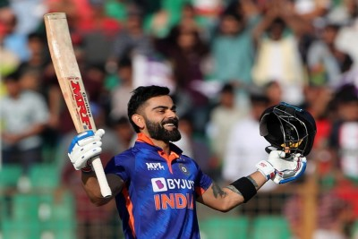

The Run Machine
A photograph of Virat Kohli
Virat Kohli (born 5 November 1988) is an Indian international cricketer and former captain of the India national cricket team. He is widely regarded as one of the greatest batsman of all time and the best of his time.[3] Kohli plays as a right-handed batsman for Royal Challengers Bangalore in the Indian Premier League and for Delhi in Indian domestic cricket. With 40 wins out of 68 tests, Kohli is India's most successful test captain,and one of the most successful test captains of all time. He holds the record for being the highest run scorer in both IPL and in T20 internationals. He is also the highest run scorer in T20 WC history. He was chosen as the player of the decade by ICC in 2020.
"Sham tak khelenge inki **** fat jaegi."
--Records Espn CricinfoLearn more about Virat: